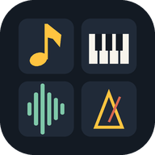

⌂ 처음
하모닉스 v
?
밝게
−
+
나가기

하모닉스
무엇을 하시겠어요?
🎼
악보 연주
악보 사진을 악보로 바꾸고
반주와 함께 연주해요
🎹
건반 연주
건반을 직접 눌러 연주해요
피아노·트럼펫·바이올린·드럼 …
🎤
튜너 · 음 찾기
악기 소리를 듣고 음 이름과
음정이 맞는지 알려 줘요
⏱
메트로놈
박자·쪼개기·탭 템포로
연습 박자를 맞춰요
© GLORY · All rights reserved
⌂ 처음
악기:
피아노
▾
◀
▶
⟲ 건반 돌리기
⛶
● 녹음
▶ 듣기
지우기
녹음 없음
▶ 비트
BPM
악보로 보내기 →
악보 보기
메트로놈
서스테인
도레미
옥타브
−
C4
+
건반 크기
−
+
음량
MIDI 저장
건반을 누르면 위 악보에 바로 적혀요 · 위 작은 막대를 밀면 더 많은 건반 · 「건반 돌리기」로 가로로 눕혀 보세요
악기 고르기
✕
⌂ 처음
🎤 튜너 · 음 찾기
🎤 시작
🎤 모든 음
🎸 기타 모드
♪
마이크를 켜고 악기 소리를 내 보세요
♭ 낮음
높음 ♯
–
기준음 A4
−
440
+
Hz
도레미
민감도
보통
높음
매우 높음
최대 (조용한 곳)
🔔 띵 소리 켬
🔊 목표음 듣기
건반을 누르면 그 음이 목표가 돼요(소리도 나요). 목표를 정하면 그 음에 얼마나 맞는지 보여 줘요.
민감도가 높을수록 작은 소리도 듣지만 주변 소리도 잘 주워요 — 조용한 곳은 「높음」, 시끄러우면 「보통」.
⌂ 처음
⏱ 메트로놈
−
보통
+
▶ 시작
박자
쪼개기
탭 템포
첫 박 강조
음량
「탭 템포」를 박자에 맞춰 여러 번 두드리면 빠르기를 알아서 맞춰요.